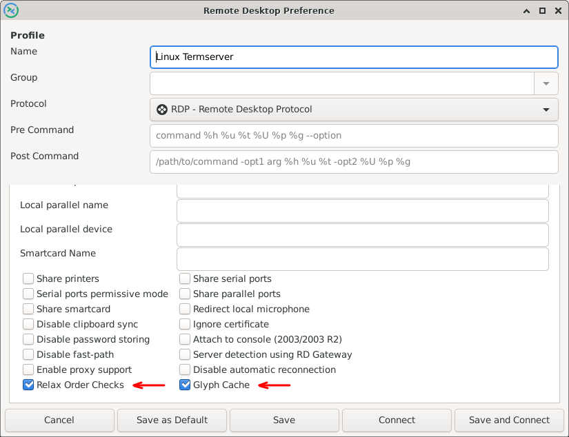

Hello World...
These are my Blog pages.
It's a very plain and simple HTML pages, with a menu on the left.
I just put stuff in here, that I had to troubleshoot or develop...
Hello World...
These are my Blog pages.
It's a very plain and simple HTML pages, with a menu on the left.
I just put stuff in here, that I had to troubleshoot or develop...
Remmina - over two hops - Does not connect to xRDP, displays black screen and shows "Reconnection in progress 1 of 20"
So this is difficult to explain, but here we go.
Hop 1:
I use my laptop (Kubuntu 18.04) to xRDP into a VM server (Xubuntu 19.04).
So here I create one xRDP connection - using xorgxrdp 1:0.2.9-1 on the VM server.
Hop 2:
I create a VPN connection to office VPN, with openfortivpn client.
I then xRDP into another VM server at the office (Kubuntu 19.10), but this fails.
Error is as follow.
I can see the xRDP logon screen for a second, then it disappears and I see message on screen -
"Reconnection in progress 1 of 20"
The screen then loops between xRDP logon screen and Reconnection error.
After several days of fault finding and looking at firewall logs, Linux syslogs and google'ling the works,
I found a very obscure post that describes issue.
Issue is related to libfreerdp.
To fix it enable the following switches in Remmina.
Go to Advanced setting in the Connection profile and enable.
- Relax order checks
- Glyph cache

Empty...